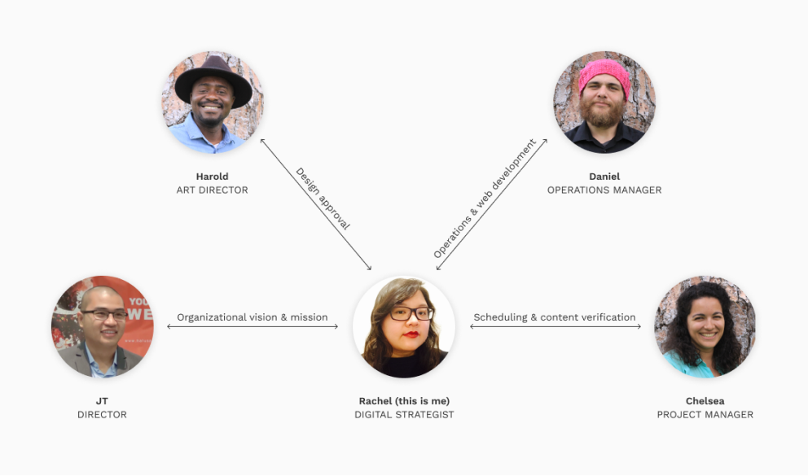
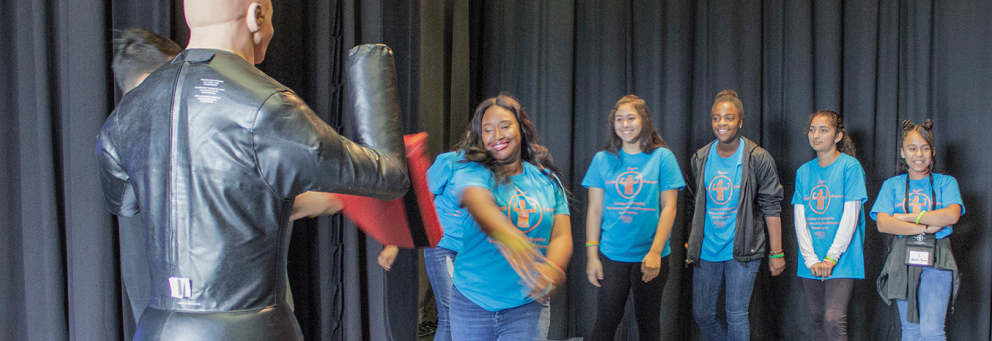
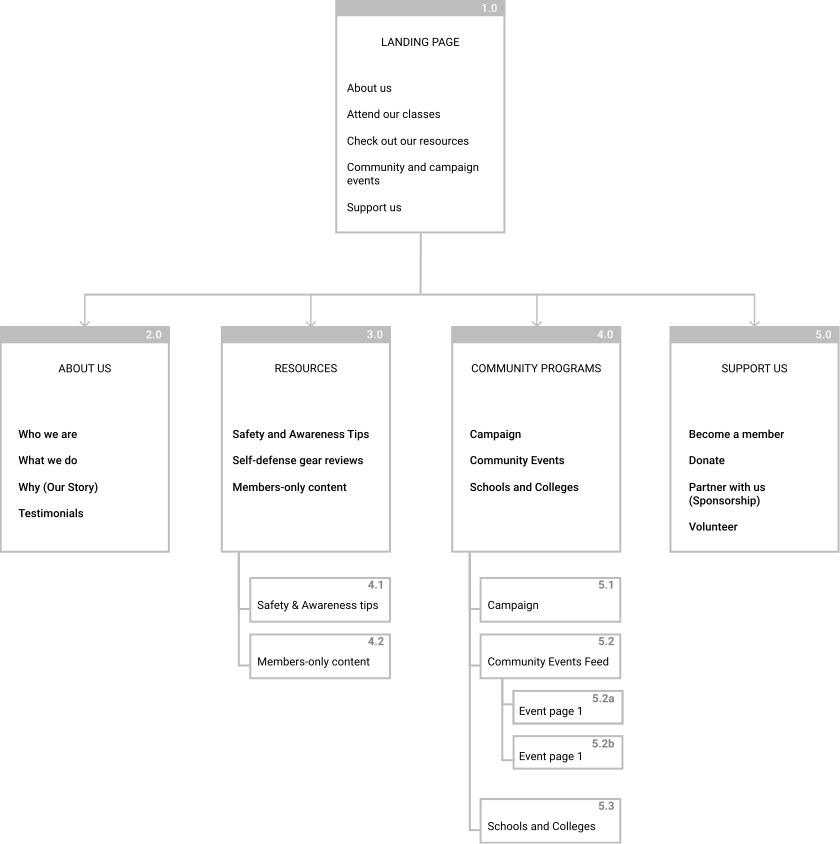
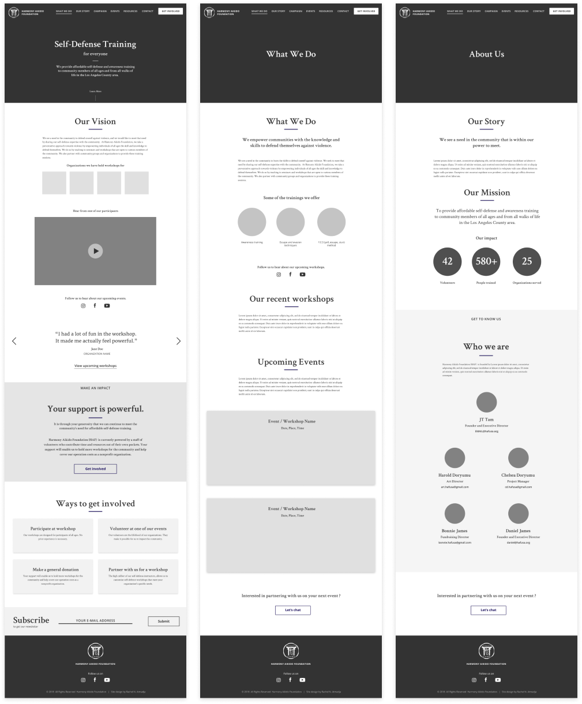
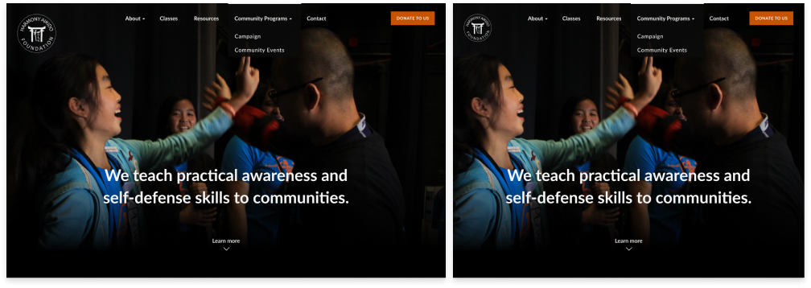
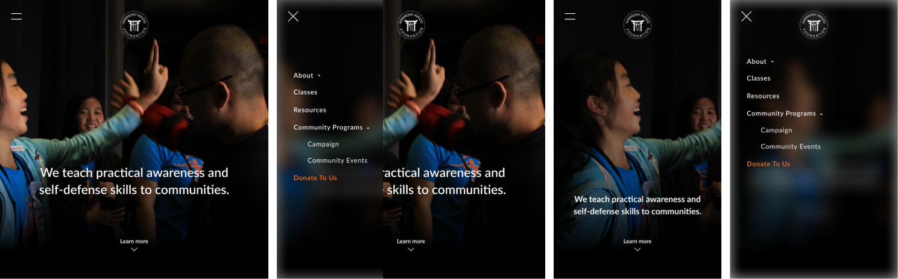

ROLES
- Digital Strategist
- Web Designer
- UX Designer
DELIVERABLES
- High-fidenlity mock-up
- Wireframe
- Sitemap
- Personas
- Competitive analysis
SPECIFICATIONS
- Duration:
- 4 Weeks
- Tools:
- Figma
- Photoshop
- Google docs
Overview
Harmony Aikido Foundation engaged me to design their website from the ground up. There are no existing design system or style guide, only a logo and an the organization’s navy color to begin with. HAF is fortunate to have seasoned developer Daniel James on their staff. I consulted Daniel’s expertise to evaluate web development feasability and worked closely with him to ship this website. With a tight timeline of one month from design to build, I made every effort to utilize repetitive components in the design.
A website for the Harmony Aikido Foundation
This is a story about how a website design effort became the catalyst fornonprofit organization to crystalize their future goals and objectives.
Objectives
How the project got started
When a friend told me that the nonprofit organization she manages is in need of a new website to bolster their digital presence, I immediately volunteered.
Harmony Aikido Foundation (HAF) is a nonprofit that takes a preventative approach against violence by equipping people to defend themselves and their loved ones against physical attacks. They partner with local community groups to provide high-quality self-defense and awareness training for community members of all ages. Here is a video showcasing their campaign to equip 1,000 women with self-defense training.
From web designer to digital strategist
“What do you want to accomplish with this new web site, and what are you prepared to offer to the public once this launches?”
Asking the two questions above transformed a design requirements-gathering effort into a much-needed stakeholder goal-alignment and organizational growth-planning process.
Here is a diagram of the lines of communication:
My role quickly grew from web designer to that of digital strategist. I facilitate the alignment process between stakeholders on long-term organizational goals and collaborated with various departments to gather requirements and determine the objectives and key results that each stakeholder is looking for. I then translate the organization’s identity and values into a compelling website.
Key objectives
After several in-person meetings, phone calls, and video conferences with key staff members, we came up with the following primary goals for the site:
A DIGITAL IDENTITY
The site is HAF’s digital presence that conveys its vision, mission, and impact to the general public as well as to the four main groups that HAF interacts with: public officials, program coordinators, parents of participants, and the participants themselves.
A HUB FOR COMMMUNICATIONS
The new site will consolidate all HAF-related information in one centralized location, it will act as a centralized hub that collects traffic that is funneled by social media platform.
A CAMPAIGN EXTENSION
The site will serve to extend Harmony Aikido Foundation’s campaign efforts to the digital space. The HAF Resources section is projected to play a key part in building an online following for HAF, as well as for future media fundraising campaigns.
Research
Who are we designing for?
After speaking to the HAF’s Project Manager and Operations Manager, we determined that our primary audience comprise of four groups: the public officials, program coordinators, parents of participants, and the class participants themselves. Meet the four personas that represent each group:
Competitive analysis
I studied several key players in the self-defense and nonprofit space to identify industry standards and trends. Impact Bay Area of San Francisco and Guardian Gym of Oakland stood out for their focus on empowering communities to prevent violence. I analyzed the way each one communicates their identities through their websites.
Both Impact Bay Area and Guardian Gym emphasizes community activism by choosing images that highlight community members that they impact—a different approach than the traditional focus on individual martial arts pedigrees prevalent in martial arts sites. A key weakness on both websites is in the way they both present dense factual information in blocks of texts that are inconsistently sized and spaced.
I looked to nonprofit organizations Upstream International and International Justice Mission (IJM) for UI inspirations as I assemble the style guide.
Both Upstream and IJM adopts a long and linear landing page layout with a navigation bar that appears on scrolling upwards.
Upstream has a wonderful use of color and imagery to tell their story. However at times it was hampering the legibility of their content.
IJM does a great job in organizing dense information into readable chunks supported by imagery. The cleanliness of their navigation bar (at only six top-level menu items) is impressive for a nonprofit of their scale and caliber.
Structure
I began to define the functionality, content, navigation, and interaction models through page-level wireframes, site-maps, and building a page prototype on figma. I also designed a style guide that incorporates HAF’s trademark navy blue color and its existing logo.
Sitemap
I was able to narrow down the scope of the website design effort and convey it in this preliminary sitemap. I made every effort to make sure that a piece of information is neve rmore than three levels deep. At this stage, we knew that we would be implementing a fixed top navigation bar due to the long and linear nature of our landing page.
Wireframe structure
Initially, we considered a carousel of images to grace the hero portion of the page. However we did not want to risk users being unable to discover information because they did not stay long enough for the hero content to auto-advance. So in order to increase discoverability and facilitate better stortytelling, I opted to go with a long and linear page layout that succinctly narrates Harmony Aikido Foundation’s background, story, and impact using just the right amount of text and plenty of imagery.
Design Studies
Selecting an art direction
HAF is in a unique position in that it is a nonprofit organization that operates in the self-defense space. Their focus on empowering individuals to affect entire communities led to an art direction that focuses on capturing real-life participants through great photography.
Fortunately, HAF has a talented photographer who happens to be their Project Manager—Chelsea Doryumu. All of the full-bleed photography featured as hero elements of the page are taken by Chelsea during actual HAF training events.
Hero and navigation studies
Armed with the art direction of featuring beautiful photographs, I created several iterations of the hero image.
The long and linear layout of our pages necessitates a fixed navigation bar. I also experimented on several color schemes for the navigation bar.
Design iterations and preference tests
Hero image
“Which of these two hero image options does a better job of conveying the concept of empowered strength?”
15%
85%
Community events feed
“Which of these two events feed layout is more informative?”

40%
60%
Responsive strategy
The focal point of most of the featured photography tends to be towards the center of the image. And so we aligned thehero text closer towards the bottom of the hero-image.
At desktop widths, we provided a horizontal top navigation bar that docks to the top of the viewport once a person scrolls past the hero image. It was important to give users the ability to quickly navigate to and from a page at any point during their page-scrolling experience.
At tablet widths, the top navigation bar collapses into a double-bar icon that summons a navigation drawer when tapped. At mobile widths, the same double-bar icon summons a modal view that covers an entire viewport.
Final Design
Typography
Crimson Text with its generous x-height is chosen for the body text. For its ability to complement the geometry of Crimson Text, the typeface Lato is chosen for headers. It has enough warmth and personality to work as a display face.
Style Tiles
A complementary color scheme of blue and orange suits the project needs of needing a bright primary color for dark backgrounds, and a saturated one to stand out against the white background.
Putting it all together
With a solid style guide in place, the layout of all web pages proceeded smoothly. A tight deadline of 1 month and a lean team led me to create a design that is very similar in layout but with interchangeable parts. In the end, this tight constraint served to create a very unified MVP of a nonprofit identity site. Here are the high-fidelity mock-ups of the webpages.